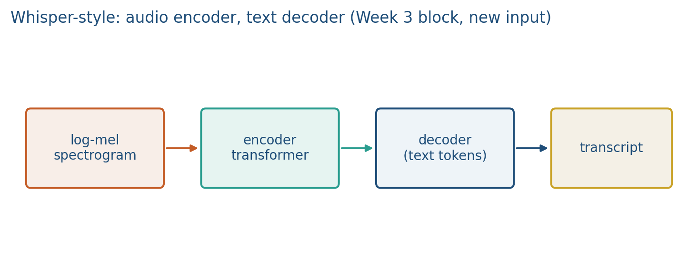
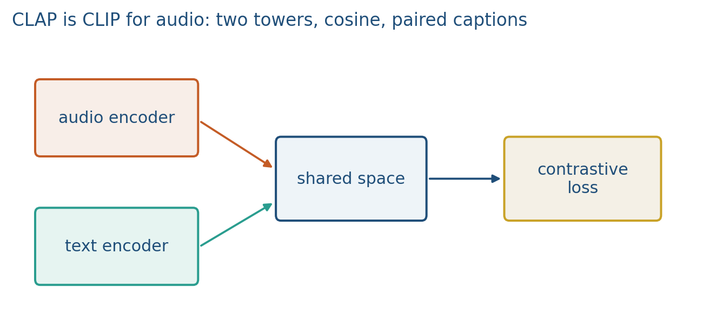

6.2 Audio Encoders and Speech Models
Patch or frame the spectrogram, then a transformer. Whisper-style encoder–decoder.
These notes match the lecture slides. Use (slides) on the course hub for the deck.
Two audio systems you will cite: Whisper transcribes (encoder–decoder), CLAP retrieves (two towers, like CLIP). Same spectrogram tokens, different heads.
1. Whisper: listen, then write
Radford et al. (2022). The encoder is a transformer on log-mel spectrogram patches (note 6.1). The decoder is causal and cross-attends to the encoder, like translation in note 3.3. The output is text, plus special tokens for language, timestamps, and task (transcribe versus translate).

Pretraining is weakly supervised: a huge pile of audio paired with transcripts from the web, filtered rather than hand-labeled. Multilingual is the point. You do not train this from scratch in the lab; you would load a checkpoint. The architecture is what you need to draw.
Default front end: 25 ms windows, 10 ms hop, 80 mel bins, 30-second chunks. Thirty seconds at a 10 ms hop is 3000 frames before patching/conv downsampling. The decoder never sees raw samples; it sees encoder states.
Draw the two arrows: encoder self-attention over time–frequency tokens, decoder causal self-attention plus cross-attention into those states. That is the same picture as translation (note 3.3), with a spectrogram instead of a source sentence.
2. CLAP: CLIP, but the image is sound
CLAP (Contrastive Language–Audio Pretraining) is coordinated, not joint. An audio encoder (CNN or transformer on the spectrogram) and a text encoder emit vectors in one space. InfoNCE on audio–caption pairs. After training you keep both towers.

Zero-shot tagging: encode "a dog barking", rank clips by cosine. Retrieval both ways. It is not a transcriber. If you need words, use Whisper (or a CTC ASR). If you need “find the clip that matches this sentence,” use CLAP.
The text tower can be bidirectional (BERT-style) because you encode a whole caption as one vector. Whisper’s decoder is causal because it emits tokens left to right.
InfoNCE on a batch of pairs is the CLIP loss from note 4.3: one audio vector per clip, one text vector per caption, a cosine matrix, positives on the diagonal. After training you throw away the matrix and keep the two encoders.
3. Which one in a project
| Need | Model |
|---|---|
| Transcript, subtitles, timestamps | Whisper |
| Search / zero-shot tags / audio–text retrieval | CLAP |
| Generate a caption in free text | a decoder with an audio encoder (Whisper-like, or a BLIP-style audio LM) |
Fusing audio with vision or text is next (note 6.3). Do not concatenate a Whisper hidden state into CLIP and call it a paper; say how you aligned the rates and the losses.
4. Teaching this note
About 30–35 minutes at the board: draw the Whisper encoder–decoder (cross-attention arrows), then the CLAP two-tower picture, then fill the table with a project prompt from the room. Play the Whisper video in full (~5 min). This is not Lab 6; the lab stays on a sine STFT and toy fusion.
Board order: (1) 30 s 3000 frames, (2) decoder special tokens, (3) CLAP cosine rank, (4) “which model for this app?” You should leave the hour able to pick Whisper vs CLAP without hedging.
If someone says “both take spectrograms so they are the same,” stop and point at the head: causal decoder vs a cosine.
5. Worked example
Whisper chunk: 30 s, hop 10 ms mel frames, 80 bands. After a stride-2 conv (as in the paper’s stem), you are on the order of 1500 encoder time-steps, not 30 s 16 kHz waveform samples. That is why the spectrogram exists.
Decoder: special token <|transcribe|> then English text. The loss is next-token on those text tokens, conditioned on the encoder. Timestamp tokens are just more vocabulary; they are not a separate model.
CLAP retrieval: three clips with audio embeddings and a query text . Cosines . Rank is clip 2, then 3, then 1. No decoder ran. If the user wanted a transcript of clip 2, you would call Whisper on the waveform, not on .
6. Where students get stuck
- Calling CLAP a “speech-to-text model” because both take spectrograms. The head is the task.
- Forgetting Whisper’s decoder is causal and CLAP’s text tower need not be.
- Stuffing Whisper encoder states into a CLIP image slot without resampling time. Rates (10 ms frames vs patch tokens) have to be named.
7. Video
What's AI — OpenAI's Whisper Model Explained. Play 0:00–end (~5 min). Pause on the encoder–decoder sketch and on the 30-second chunk. CLAP is the board comparison; this clip is Whisper only.
8. Practice
-
Whisper’s decoder is causal. Why can CLAP’s text tower be bidirectional like BERT?
-
You have a gallery of podcast clips and a typed query. Whisper or CLAP? Why?
-
Name one special token Whisper uses that CLIP never needed.
-
A 10 s clip, 10 ms hop, 80 mel bins, no extra pooling. How many time frames hit the encoder? If you then cut non-overlapping 2-frame patches along time only, how many patch tokens?
-
Two captions score and cosine against one clip. You want words that were actually spoken. Which model, and what does the number not tell you?